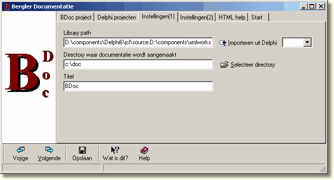

Documentatie aanmaken
In het programma wordt in vijf stappen opgegeven welke documentatie er moet worden aangemaakt. Deze instellingen kunnen worden opgeslagen in een .BD bestand zodat de documentatie later opnieuw kan worden aangemaakt zonder de instellingen openieuw op te geven. Door bij de verschillende stappen op F1 te drukken krijgt u steeds de helptekst behorende bij dat scherm.

Volgende: Documentatie gebruiken